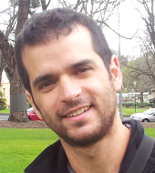

Stats285 Data Science Hackathon 2018
Participation in this two-day hands-on hackathon is required for students who are taking this course. If you are sitting in on this course and would like to take part in this hackathon, please send us an email to stats285.stanford@gmail.com
- Meet Hackathon Mentors
- Time and Venue
- Structure of the Hackathon
- Challanges
- Presentation and Prize
- Acknowledgements
Meet Hackathon Mentors
 |
 | |
|---|---|---|
| Vardan Papyan | Alon Kipnis | Yaniv Romano |
Time and Venue
The hackathon starts at 8:00 AM on Nov 17 and ends at midnight on Nov 18. The event takes place at Wallenberg Hall-Building 160.
Structure of the Hackathon
You will be divided into working groups of 4 people. Each group will have an external mentor (assigned by the instructors). Your mentors are experienced participants who will faciliate the collaboration and provide insights and guidance when needed.
Challanges
Please use the passcode you receive on Canvas from your instructor to log into Challanges Page.
Presentation and Prize
Each group must prepare a 10 min presentation about the challanges and the solutions they have addressed during the hackathon. One of the groups will be selected to receive a prize based on the quality of the presented work.
Acknowledgements
- We would like to thank Google Cloud Platform Education Grants Team for their generosity and kindness in providing Stats285 course with cloud computing grant.
- We would like to thank ElastiCluster team especially Dr. Riccardo Murri for their help and collaboration on this project.